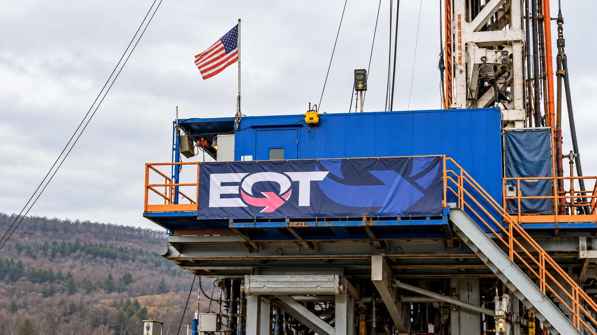

EQT Agrees to Buy Range Resources in a Roughly $13 Billion Stock Deal
The gas producers would form a company worth over $50 billion including debt; Range shareholders would receive 0.987 EQT shares for each share.

EQT has agreed to acquire Range Resources in an all-stock transaction that values Range's equity at roughly $12.8 billion, combining two major Appalachian natural-gas producers. The companies announced the agreement Monday morning. Range investors would receive 0.987 EQT shares for each share they own, tying the value of their consideration to the buyer's stock price.
The more than $50 billion figure in the companies' announcement describes the proposed combined company's enterprise value, including debt. It is not a $50 billion cash payment to Range shareholders. That distinction separates the size of the resulting business from the value being offered for the target's equity, two figures that can otherwise make the same transaction appear radically different.
Our guide to mergers and acquisitions explains how the form of payment changes the risks borne by each side. Here, the fixed exchange ratio gives Range holders a continuing interest in the combined business. It also means the dollar value of the offer can change before the deal closes, even if the number of EQT shares offered stays the same.
What shareholders would own
The SEC filing says the companies signed the merger agreement October 25. Existing EQT shareholders would own approximately 73% of the combined company, with Range shareholders holding around 27%, on a fully diluted basis. Both boards approved the agreement, but completion still requires shareholder votes, regulatory clearance and other conditions. An agreed transaction is not a completed merger.
Reuters calculated an implied offer price of $54.91 per Range share using the relevant pre-announcement stock price, about 20.6% above Range's Friday close. That is a reference valuation, not a guaranteed cash redemption amount. A fixed-ratio stock offer can deliver a different dollar value if the buyer's shares move while approvals are pending.
For investors comparing the companies' prices, our explanation of merger spreads sets out why the target may trade below the apparent offer value. Time to completion, the acquirer's share price and the possibility that conditions are not satisfied all matter. A price gap alone is not evidence of an assured profit.
The industrial case rests on integration
The companies say the combination would bring together more than 9 billion cubic feet equivalent of daily production, nearly 3 million net acres and over 3,700 miles of midstream infrastructure. The equivalent-volume measure includes more than dry natural gas, so it should not be read as a statement about pure methane output alone.
The strategic logic is to combine resources with the infrastructure and marketing needed to reach customers. Larger inventories can support longer supply commitments, while gathering and transport assets influence how production reaches demand. Scale is useful only if those parts work together economically; adding acreage does not by itself guarantee lower delivered costs or higher realized prices.
EQT forecasts $325 million in annual base synergies within two years. The companies also describe a path to larger longer-term benefits, but these remain management expectations. Integration costs, operational decisions and commodity prices will determine the value shareholders eventually receive. A forecast saving should not be treated as cash already generated by the combined operations.
Cash-flow forecasts depend on gas prices
The announcement projects about $20 billion of cumulative free cash flow over five years using recent futures-strip pricing. That assumption matters as much as the headline number. A futures curve provides a market-based reference for prices over time; it does not guarantee the prices at which future output will actually be sold.
Our free cash flow guide also distinguishes operating receipts, capital spending and financing effects. EQT labels the projection a non-GAAP measure. Readers should assess it alongside the definition and pricing assumptions rather than comparing it directly with another producer's differently calculated cash-flow target.
The companies expect closing in the first quarter of 2027. Until then, the practical tests are approval progress, operating performance and whether the anticipated benefits remain credible as gas prices and investment plans change. The deal offers Range investors ownership in a larger producer, with exposure to both the opportunities and the execution risks of that combination.
Sources and methodology
Sources checked October 26, 2026. Company statements, reported findings and forecasts are attributed in the text. Financial and operational implications are editorial analysis. The generated cover is illustrative.